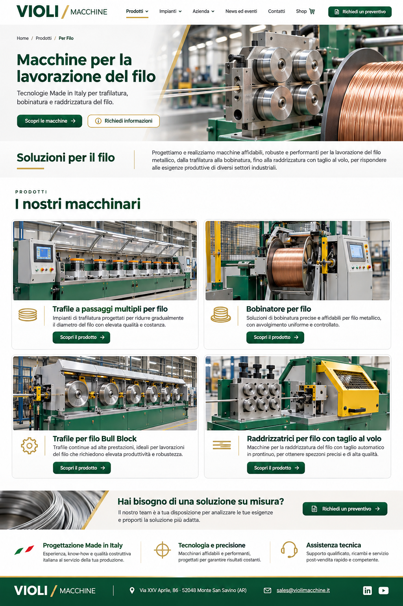

Trafile a passaggi multipli per filo
Impianti di trafilatura progettati per ridurre gradualmente il diametro del filo con elevata qualità e costanza.

Tecnologie Made in Italy per trafilatura,
bobinatura e raddrizzatura del filo.
Progettiamo e realizziamo macchine affidabili, robuste e performanti per la lavorazione del filo metallico, dalla trafilatura alla bobinatura, fino alla raddrizzatura con taglio al volo, per rispondere alle esigenze produttive di diversi settori industriali.
Prodotti
Impianti di trafilatura progettati per ridurre gradualmente il diametro del filo con elevata qualità e costanza.
Soluzioni di bobinatura precise e affidabili per filo metallico, con avvolgimento uniforme e controllato.
Trafile continue ad alte prestazioni, ideali per lavorazioni del filo che richiedono elevata produttività e robustezza.
Macchine per la raddrizzatura del filo con taglio automatico in continuo, per ottenere spezzoni precisi e di alta qualità.
Il nostro team è a tua disposizione per analizzare le tue esigenze
e proporti la soluzione più adatta.
Soluzioni avanzate e personalizzate, costruite insieme a te.
Dal progetto alla macchina, nella nostra sede di Monte San Savino.
Installazione, training, manutenzione e ricambi dedicati.